Pokédex / #475
Gallade #475
PsychicFighting
When trying to protect someone, it extends its elbows as if they were swords and fights savagely.
Generation 4 · Sinnoh
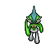
Stats
| Attack | 125 | |
|---|---|---|
| Defense | 65 | |
| Sp. Atk | 65 | |
| Sp. Def | 115 |
In the wild
| Wild level | 85–95 |
|---|---|
| HP | 68 |
| Experience | 15 |
| Egg groups | Human-Like, Amorphous |
Evolution
Mega Evolution
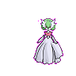
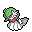
Mega Gardevoir
PsychicFairy
Mega Evolution of Gardevoir holding the Gardevoirite
| Special ability | Pixilate |
|---|---|
| Attack | 85 +20 |
| Defense | 65 |
| Sp. Atk | 165 +40 |
| Sp. Def | 135 +20 |
Wear the Mega Ring and give the Pokémon its stone to hold; the form lasts 60 seconds. Mega forms have no Pokédex entry of their own.
Moves
| Level | Move | Type | Category | Power | Energy | Cooldown | Effect | |
|---|---|---|---|---|---|---|---|---|
| 1 | Tackle | Normal | Physical | 15 | 15 | 1s | Tackle is one of the most common and basic moves a Pokemon learns. It deals damage with no additional effects. | |
| 1 | 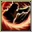 | Slash | Normal | Physical | 70 | 70 | 11s | Slash deals damage and has an increased critical hit ratio. |
| 1 | Stored Power | Psychic | Special | 20 | 80 | 18s | Stored Power deals variable damage depending on the stat modifications of the user. When the user has no stat modifications, Stored Power's base power is 20. Its power increases by 20 for each stat boost the user has. | |
| 1 | 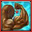 | Close Combat | Fighting | Physical | 120 | 120 | 18s | Close Combat deals damage but lowers the user's Defense and Special Defense by one stage each after attacking. |
| 1 | Leaf Blade | Grass | Physical | 90 | 90 | 14s | Leaf Blade deals damage and has an increased critical hit ratio. | |
| 1 | 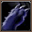 | Night Slash | Dark | Physical | 70 | 70 | 11s | Night Slash deals damage and has an increased critical hit ratio. |
| 1 | 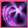 | Confusion | Psychic | Special | 50 | 60 | 12s | Confusion deals damage and has a 10% chance of confusing the target. |
| 1 | 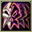 | Double Team | Normal | Status | – | 150 | 90s | Double Team increases the user's speed into maximum, creating illusions. |
| 11 | Quick Guard | Fighting | Status | – | 100 | 60s | The user protects itself and its allies from the next damage. | |
| 14 | 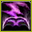 | Fury Cutter | Bug | Physical | 40 | 40 | 12s | Fury Cutter deals damage and has no secondary effect. |
| 17 | Aerial Ace | Flying | Physical | 60 | 60 | 14s | Aerial Ace deals damage and ignores changes to the Accuracy and Evasion stats. | |
| 17 | Magical Leaf | Grass | Special | 60 | 60 | 9s | Magical Leaf deals damage and ignores changes to the Accuracy and Evasion stats. | |
| 19 | 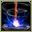 | Heal Pulse | Normal | Special | 120 | 150 | 90s | Heal Pulse recover party members HP. |
| 22 | Draining Kiss | Fairy | Special | 50 | 60 | 12s | The user steals the target's HP with a kiss. The user's HP is restored by over half of the damage taken by the target. | |
| 24 | 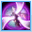 | Calm Mind | Psychic | Status | – | 70 | 60s | Calm Mind raises the user's Special Attack and Special Defense by one stage each. |
| 26 | Swords Dance | Normal | Status | – | 100 | 60s | Swords Dance raises the user's Attack by two stages. | |
| 27 | Psychic | Psychic | Special | 90 | 100 | 21s | Psychic deals damage and has a 10% chance of lowering the target's Special Defense by one stage. | |
| 31 | 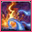 | Psycho Cut | Psychic | Physical | 7 | 80 | 16s | Psycho Cut deals damage and has an increased critical hit ratio. |
| 32 | 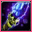 | Future Sight | Psychic | Special | 120 | 120 | 15s | Future Sight deals damage, but does not hit until two turns after the move is selected. |
| 34 | Charm | Fairy | Status | – | 50 | 60s | Charm lowers the Attack stat of the target by two stages. | |
| 37 | 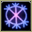 | Hypnosis | Psychic | Status | – | 80 | 60s | Hypnosis puts the target to sleep. |
| 39 | Dream Eater | Psychic | Special | 100 | 120 | 15s | Dream Eater deals damage only on sleeping foes and the user will recover 50% of the HP drained. | |
| 40 | 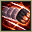 | Feint | Normal | Physical | 30 | 30 | 5s | Feint hits through moves such as Protect or Detect and lifts their effect. It has a short cooldown. |
| 49 | Protect | Normal | Status | – | 70 | 60s | Protect raises the user's Defense by two stages. |
Field abilities
CutRock SmashHeadbuttFlashStrengthTeleportBlink
Special abilities
Steadfast
Egg moves
Ally SwitchConfuse RayDestiny BondDisableEncoreKnock OffMementoMisty TerrainMystical FireShadow SneakSynchronoiseWill-O-Wisp
Technical machines
Aerial AceBrick BreakBulk UpCalm MindDouble TeamDrain PunchDream EaterEarthquakeFacadeFocus PunchHidden PowerHyper BeamLight ScreenPoison JabProtectPsychicRain DanceReflectRestRock SlideRock TombSafeguardSecret PowerShadow BallShock WaveSubstituteSwords DanceThunder WaveThunderboltToxic
Drops
| Item | Amount | Chance | |
|---|---|---|---|
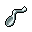 | twisted spoon | 1 | 33.3% |
| linearly guided hypnose pendant | 1 | 16.7% | |
| shadow orb | 1 | 13.3% | |
| cutting fang | 1 | 13.3% | |
| black diamond | 1 | 11.1% | |
| grey-blue powder | 1 | 8.33% | |
| onigiri | 1–5 | 7.5% | |
| luminous orb | 1 | 6.67% | |
| astral glyph | 1 | 6.67% | |
| plasmatic lightning | 1 | 6.67% | |
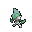 | gallade doll | 1 | 0.1% |
| Mind Plate | 1 | 0.05% | |
| Pixie Plate | 1 | 0.05% | |
| Dawn Stone | 1 | 0.02% | |
| held twisted spoon | 1 | 0.01% | |
| held pink bow | 1 | 0.01% | |
| galladite | 1 | 0.0004% |